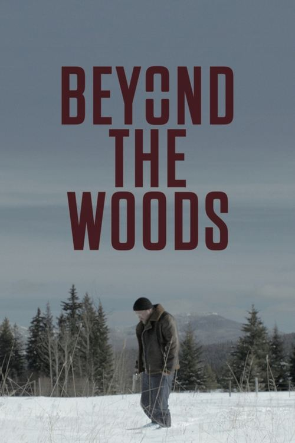

Beyond The Woods (2019)
الوصف: Beyond the Woods is a psychological thriller which follows Detective Reeves' investigation after Laura Bennett's death and the disappearance of her brother Jack. The suspect at hand is Laura's husband Andrew, who seems to be the only one to know where Jack really is. Detective Reeves must solve this never ending puzzle, as Jack's odds of survival are against him.
الممثلون
- Steven Roberts (Andrew Bennett)
- Jeff Evans-Todd (Jack Rogers)
- Broadus Mattison (Detective Reeves)
- Christie Burke (Laura Bennett)
- Alex Zahara (Police Chief)
- Kayden Boisclair (Police Officer #1)
- Cjay Boisclair (Police Officer #2)
- Shelyse Cameron (Hiker)
- Mavourneen Varcoe-Ryan (Dr. Howard)
- Michael Poirer (Father of the Church)
المخرج: Brayden DeMorest-Purdy
المنتج: Brayden DeMorest-Purdy